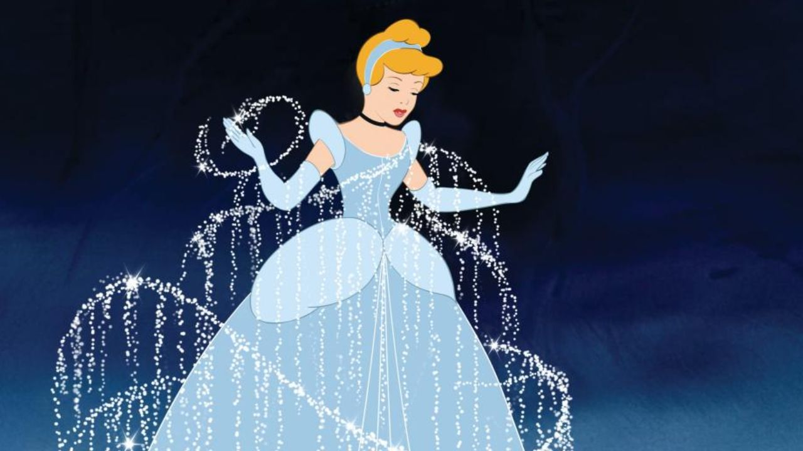

Resumo do Filme
Cinderela (1950) é um clássico animado da Disney que conta a história de uma jovem gentil e bondosa, que vive sob o domínio cruel de sua madrasta, Lady Tremaine, e das duas meias-irmãs, Drizella e Anastasia. Após a morte de seu pai, Cinderela é transformada em uma serviçal dentro de sua própria casa, realizando todas as tarefas domésticas sem nunca reclamar. Apesar das dificuldades, ela mantém a esperança de uma vida melhor e conta com o apoio de seus amigos animais, especialmente os ratinhos Gus e Jaq. Quando o rei decide organizar um baile no castelo para encontrar uma esposa para o príncipe, todas as jovens do reino são convidadas. Cinderela deseja ir, mas sua madrasta a impede e rasga seu vestido. Com a ajuda de sua Fada Madrinha, que transforma uma abóbora em carruagem e seu vestido remendado em um traje deslumbrante, Cinderela consegue ir ao baile. No entanto, a magia só dura até a meia-noite.
Clímax
No baile, Cinderela encanta o príncipe, e os dois dançam apaixonadamente sem saberem o nome um do outro. Quando o relógio marca meia-noite, ela foge apressadamente, deixando para trás apenas um sapatinho de cristal. O príncipe, decidido a encontrá-la, envia o Grão-Duque em uma busca por todo o reino, pedindo que cada jovem experimente o sapatinho. Depois de vários obstáculos criados por sua madrasta para impedi-la de tentar o sapato, Cinderela finalmente consegue experimentá-lo – e ele serve perfeitamente. Ela se casa com o príncipe e deixa para trás a vida de sofrimento, realizando seu sonho de felicidade. O filme termina com a mensagem de que a bondade, a esperança e a perseverança podem vencer as maiores dificuldades.